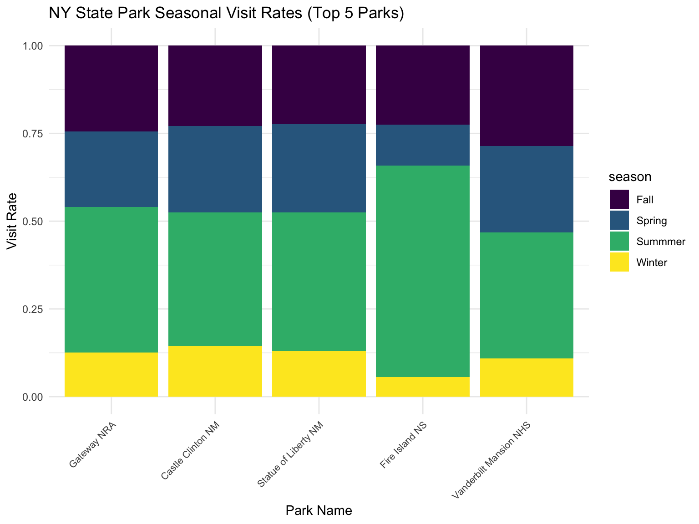
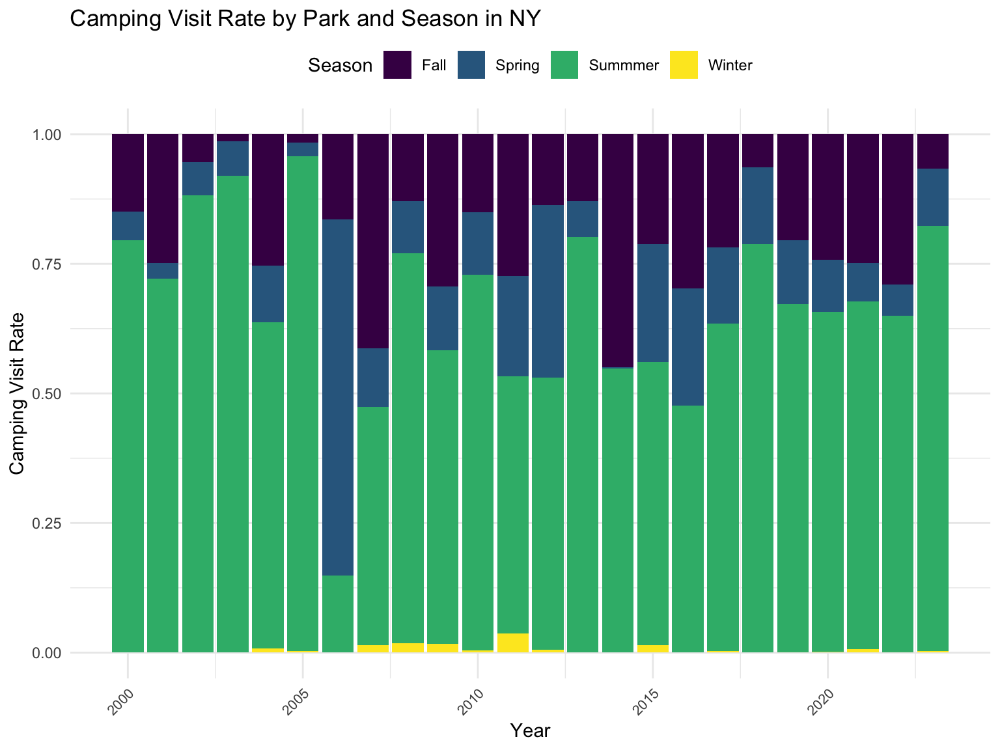
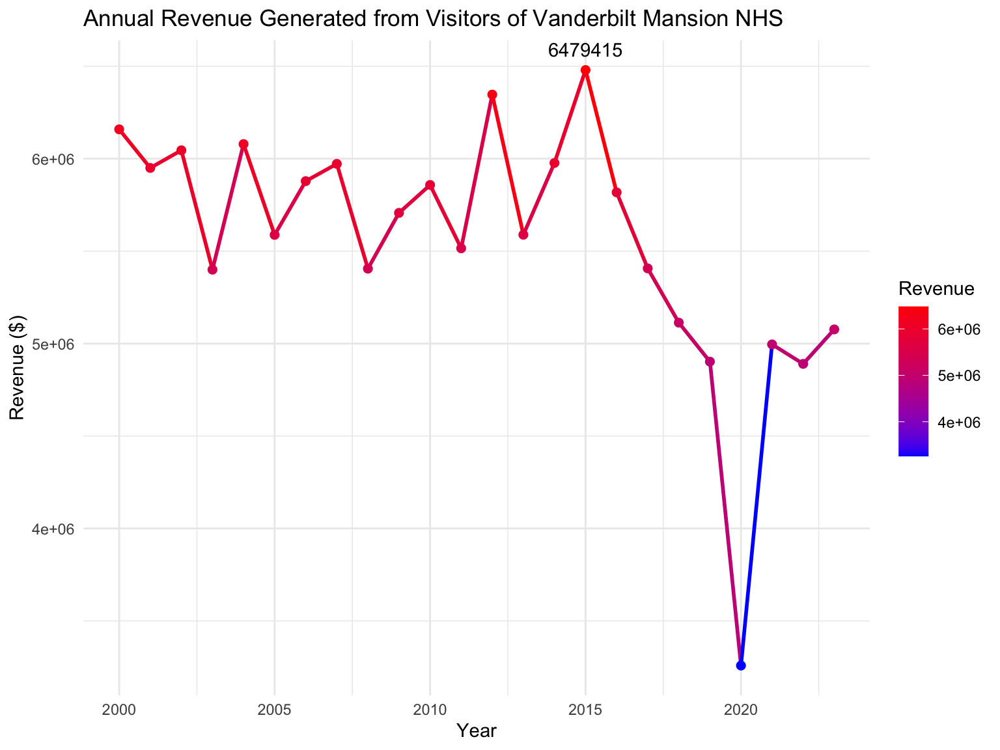

NPS_data = data %>% unnest(data) %>% unnest(activities,names_sep = '_') %>% unnest(entranceFees,names_sep = '_')
public_use_data = read.csv("data/Query Builder for Public Use Statistics (1979 - Last Calendar Year).csv")#main dataset
wildlife_relevant_public_use =
public_use_data %>%
janitor::clean_names() %>%
mutate(
recreation_visits = as.numeric(str_replace_all(recreation_visits,",","")),
concessioner_camping = as.numeric(str_replace_all(concessioner_camping,",","")),
tent_campers = as.numeric(str_replace_all(tent_campers,",","")),
rv_campers = as.numeric(str_replace_all(rv_campers,",","")),
backcountry = as.numeric(str_replace_all(backcountry,",","")),
recreation_visits_total = as.numeric(str_replace_all(recreation_visits_total,",","")),
concessioner_camping_total = as.numeric(str_replace_all(concessioner_camping_total,",","")),
tent_campers_total = as.numeric(str_replace_all(tent_campers_total,",","")),
rv_campers_total = as.numeric(str_replace_all(rv_campers_total,",","")),
backcountry_total = as.numeric(str_replace_all(backcountry_total,",",""))
)
#supplemental dataset
wildlife_relevant_NPS_data =
NPS_data %>%
janitor::clean_names() %>%
select(park_code, full_name, states, activities_name, entrance_fees_cost, entrance_fees_description,latitude, longitude, designation) %>%
mutate(
park_code = str_to_upper(park_code),
entrance_fees_cost = as.numeric(entrance_fees_cost),
latitude = as.numeric(latitude),
longitude = as.numeric(longitude)
)NY_close =
wildlife_relevant_NPS_data %>%
filter((states %in% c("NJ,NY","NJ","NY", "PA", "NJ,PA", "RI", "MA", "CT")))
map <- leaflet(NY_close) %>%
addProviderTiles(providers$CartoDB.Positron) %>%
addCircleMarkers(
~longitude, ~latitude,
radius = 4,
color = "green",
popup = ~paste("Name:", full_name,
"<br> Designation:", designation),
label = ~paste("Name:", full_name,
"Designation:", designation)
) %>%
setView(lng = -74.0060, lat = 40.7128, zoom = 7)
# Display the map
mapDiscover some of the nearby parks that is either in NY state or within driving distance! When you place your cursor on the circles, you will be able to explore the name of the park and its disposition.
wildlife_relevant_public_use %>%
distinct(year, state, park_name, .keep_all = TRUE) %>%
filter(state == "NY") %>%
mutate(text_label = str_c("Year: ", year, " Recreation Visits: ", recreation_visits_total)) %>%
plot_ly(x = ~year, y = ~recreation_visits_total, color = ~park_name, text = ~text_label, mode = 'lines+markers') %>%
layout(title = 'Popular Parks for Recreation Visits in NY state', xaxis = list(title = 'Year'), yaxis = list(title = 'Number of Recreation Visits'))Ever wondered what parks were most popular around you? This plot demonstrates some popular visits for recreation visits that people chose located within NY state. We have identified that the Gateway National Recreation Area has been the most popular. The two National Monument, Castle Clinton and Statue of Liberty seems to be a popular destination as well. The dip in 2012-2013 and 2020 accurately reflects the context during that time period: the economic recession in 2012-2013 and the pandemic in 2020 impacted this drop. To see more interesting patterns in the parks with lower visitation visit, zoom into the smaller range.
wildlife_relevant_public_use %>%
distinct(year, state, park_name, .keep_all = TRUE) %>%
filter(state == "NY", year == 2023) %>%
select(park_name, recreation_visits_total) %>%
arrange(desc(recreation_visits_total)) %>%
knitr::kable()| park_name | recreation_visits_total |
|---|---|
| Gateway NRA | 8705329 |
| Castle Clinton NM | 3929749 |
| Statue of Liberty NM | 3739607 |
| Vanderbilt Mansion NHS | 338436 |
| Fire Island NS | 298958 |
| Sagamore Hill NHS | 131333 |
| Home of Franklin D. Roosevelt NHS | 117789 |
| Saratoga NHP | 101943 |
| General Grant NMEM | 84153 |
| Fort Stanwix NM | 83401 |
| Federal Hall NMEM | 76750 |
| Hamilton Grange NMEM | 48674 |
| African Burial Ground NM | 40817 |
| Governors Island NM | 38670 |
| Womens Rights NHP | 35934 |
| Theodore Roosevelt Inaugural NHS | 23159 |
| Theodore Roosevelt Birthplace NHS | 19892 |
| Eleanor Roosevelt NHS | 17190 |
| Martin Van Buren NHS | 12438 |
| Saint Pauls Church NHS | 11615 |
Now, we wanted to see the trendiest park destination in 2023, and determine where to go for our next travels. Weve arranged the popular destination see the most visited park in the past year.
seasonal_camping =
wildlife_relevant_public_use %>%
filter(state == "NY") %>%
select(year, month, park_name, recreation_visits, tent_campers, rv_campers, backcountry) %>%
mutate(season =
case_when(
month %in% c(12, 1, 2) ~ "Winter",
month %in% c(3,4,5) ~ "Spring",
month %in% c(6,7,8) ~ "Summmer",
month %in% c(9,10,11) ~ "Fall")
) %>%
group_by(year, season, park_name) %>%
summarise(
total_visit = sum(recreation_visits, na.rm = TRUE),
tent_camping = sum(tent_campers, na.rm = TRUE),
rv_camping = sum(rv_campers, na.rm = TRUE),
backcountry_camping = sum(backcountry, na.rm = TRUE)
) %>%
mutate(
total_camping = tent_camping + rv_camping + backcountry_camping)
top_parks <- seasonal_camping %>%
group_by(park_name) %>%
summarise(total_visits = sum(total_visit)) %>%
arrange(desc(total_visits)) %>%
slice_head(n = 5)
top_parks <- seasonal_camping %>%
group_by(park_name) %>%
summarise(total_visits = sum(total_visit)) %>%
arrange(desc(total_visits)) %>%
slice_head(n = 5)
# Add visit rate to the dataset
filtered_data <- seasonal_camping %>%
filter(park_name %in% top_parks$park_name) %>%
group_by(park_name) %>%
mutate(
total_visits = sum(total_visit), # Total visits for each park
visit_rate = total_visit / total_visits # Calculate visit rate
)
# Create the plot using visit rate
filtered_data %>%
ggplot(aes(x = reorder(park_name, -total_visits), y = visit_rate, fill = season)) +
geom_bar(stat = "identity", position = "stack") +
theme_minimal() +
labs(
title = "NY State Park Seasonal Visit Rates (Top 5 Parks)",
x = "Park Name",
y = "Visit Rate"
)+
theme(
axis.text.x = element_text(angle = 45, vjust = 1, hjust = 1, size = 8)
)
We thought about how people may visit different parks based on
the season! This plot shows the visit rate the proportion of visitors
each park gets during different seasons. Fire Island NS dominate summer,
reflecting their urban appeal, while quieter parks like Vanderbilt
Mansion NHS draw steady attention across multiple seasons. Its a
snapshot of how New Yorkers and tourists alike connect with nature
year-round.
seasonal_camping =
wildlife_relevant_public_use %>%
filter(state == "NY") %>%
select(park_name, year, month, recreation_visits, tent_campers, rv_campers, backcountry) %>%
mutate(season =
case_when(
month %in% c(12, 1, 2) ~ "Winter",
month %in% c(3,4,5) ~ "Spring",
month %in% c(6,7,8) ~ "Summmer",
month %in% c(9,10,11) ~ "Fall")
) %>%
group_by(year, season) %>%
summarise(
total_visit = sum(recreation_visits, na.rm = TRUE),
tent_camping = sum(tent_campers, na.rm = TRUE),
rv_camping = sum(rv_campers, na.rm = TRUE),
backcountry_camping = sum(backcountry, na.rm = TRUE),
total_camping = tent_camping + rv_camping + backcountry_camping
) %>%
mutate(
camping_visit_rate = total_camping / sum(total_camping),
camping_visit_rate = ifelse(is.nan(camping_visit_rate), 0, camping_visit_rate) # Replace NaN with 0
)
# Calculate camping visit rate grouped by park_name and season
seasonal_camping %>%
ggplot(aes(x = year, y = camping_visit_rate, fill = season)) +
geom_bar(stat = "identity", position = "stack") + # Stacked bar chart for proportions
labs(
title = "Camping Visit Rate by Park and Season in NY",
x = "Year",
y = "Camping Visit Rate",
fill = "Season"
) +
theme_minimal() +
theme(
axis.text.x = element_text(angle = 45, hjust = 1, size = 8), # Rotate x-axis labels for clarity
legend.position = "top" # Move legend to the top for better visualization
)
Looking at the camping visit rate across parks in NY state, a
notable pattern is the sudden spike in the proportion of summer camping
in 2006. This shift could reflect broader cultural or economic changes
that year, such as increased interest in outdoor recreation or economic
factors encouraging local travel. The summer spike coincides with a
national trend in 2006, where families increasingly turned to camping as
an affordable vacation alternative during economic recession. This
historical moment showcases how external events can shape seasonal
camping behavior.
NY_public_use=
wildlife_relevant_public_use %>%
filter(state == "NY") %>%
select(park_name, unit_code, year, month, recreation_visits, tent_campers, rv_campers, backcountry, concessioner_camping)
NY_NPS =
wildlife_relevant_NPS_data %>%
filter(states =="NY") %>%
select(park_code, full_name, entrance_fees_cost)
joint_df = left_join(NY_public_use, NY_NPS, by = c("unit_code" = "park_code")) %>%
distinct(year, month, park_name, .keep_all = TRUE)
joint_df %>%
filter(park_name == "Vanderbilt Mansion NHS") %>%
mutate(revenue = recreation_visits* entrance_fees_cost) %>%
select(year, month, recreation_visits, revenue) %>%
group_by(year) %>%
summarise(
annual_revenue = sum(revenue)
) %>%
ggplot(aes(x = year, y = annual_revenue, color = annual_revenue)) +
geom_line(size = 1) +
geom_point(size = 2) +
scale_color_gradient(low = "blue", high = "red", name = "Revenue") +
geom_text(aes(label = ifelse(annual_revenue == max(annual_revenue), round(annual_revenue, 0), "")),
vjust = -1, color = "black") +
labs(
title = "Annual Revenue Generated from Visitors of Vanderbilt Mansion NHS",
x = "Year",
y = "Revenue ($)"
) +
theme_minimal()
We were first curious about how much revenue the Vanderbilt
Mansion, a National Historic Site, generates each year. What I found
instead was a consistent decline in annual revenue over the years,
hinting at a possible drop in visitor interest. The plot shows
occasional peaks, but the overall trend is unmistakably downward. This
raises important questionsare visitor preferences shifting? Is the site
losing visibility? These findings highlights the need for fresh
approaches to reignite public interest in this historic site and ensure
its story continues to resonate with future generations.